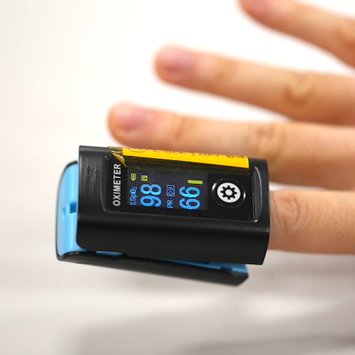
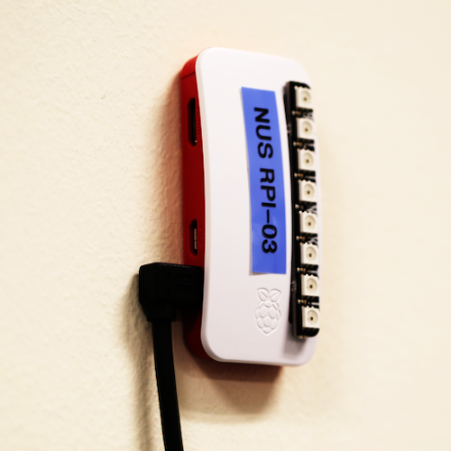

Personal Wireless
Pulse Oximetry
Overview
We are a team of NUS researchers working to use existing technology and data analytical methods to respond to the Covid-19 crisis in foreign worker domitories.

Personal Oximeter
Measures the amount of oxygen in your blood

Wireless Nodes
Records patients' readings and uploads to cloud
Measurements
Receive notifications about patients' readings from the cloud